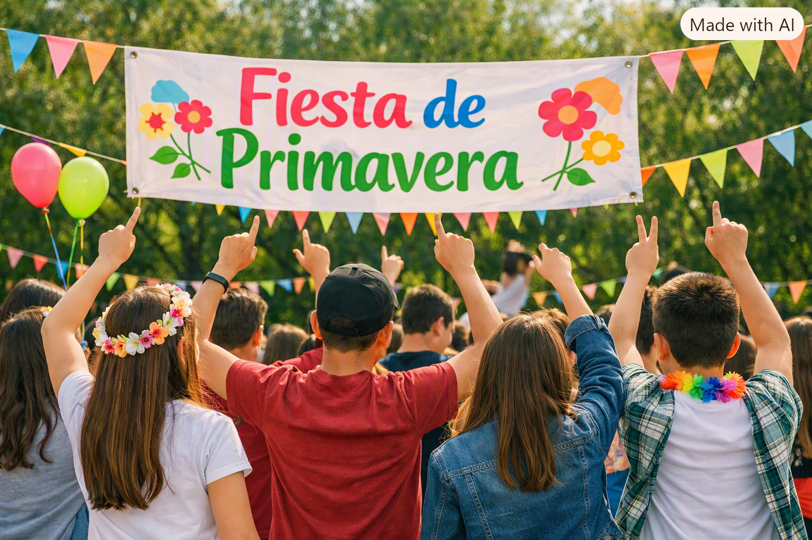

Bienvenidos a la Fiesta de la Primavera
Como todos los años, el Liceo Nº 3 celebra la primavera con una jornada abierta a toda la comunidad educativa.
Habrá música, stands, actividades recreativas y muchas sorpresas.
Información
¿Cuándo y dónde?
📅La fiesta se realizará el 18 de septiembre de 15:00 a 20:00 hs en el patio central del liceo.
🆓La entrada es libre y gratuita. Se suspende por lluvia y se reprograma para el viernes siguiente.
ℹ️Para más detalles, consultar el programa de actividades.